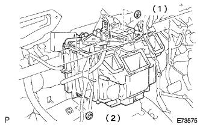
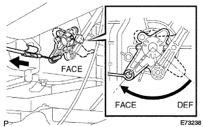
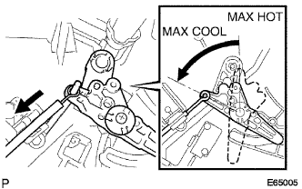

Installation of heater radiator |
| 1. Installation of heater radiator |
|  |
With two nuts, attach the heater radara.
| 2. Defrosta Dan Passolol Cable SUB-ASSY Installation (A / C Manual) |
Connect the defrostadan passor cable to the heater control & accessory and make it Face.
Attach the control lever to the tip of the inner cable at the face position.
|  |
While pulling the outer cable in the direction of the arrow, attach it to the cable clamp.
| 3. Air Mix Dan Papon Round Cable SUB-ASSY Installation (A / C Manual) |
|  |
Connect an air mix damp control cable to the heater control and accessories to make Max Cool.
Attach the tip of the inner cable to the control lever at the Max Cool position.
While pulling the outer cable in the direction of the arrow, attach it to the cable clamp.
Remove the heater control & accessories.
| 4. Air duct RR No.1 Installation (cold district specification car) |
Follow the claws and attach the air duct RR No.1.
| 5. Air duct RR No.2 Installation (cold district specification car) |
Follow the claws and attach the air duct RR No.2.
| 6. Air conditioner amplifier ASSY installation |
Connect the connector, insert and attach the air conditioner ampriff ASSY.
| 7. Air conditioner broising installation |
reference)| 8. Hita Water Hose Outlet A Installation |
Attach Hita Outlett Horse A by clip.
| 9. Hita Water Hose Inlet A Installation |
 |
Attach Hita Outa Inn Lethorse A by clip.
| 10. Cooling liquid refill |
Close the radiator drain kotsuku plug and injection of cooling water until overflowing from the radiator injection.[ * 1]
Tighten the radiator kayatsu.
Inject the cooling solution into the radiator reserve tank to the upper limit.
Warm up the engine until the thermostatsu opens.
Stop the engine, wait for the cooling solution to cool, remove the radiator kyatsu and check the water level.
If the water level is lowered, repeat from [ * 1].
When the water level does not fall, adjust the cooling solution of the radiator reservoir battank.
| 11. Cooling liquid leak inspection |
Fill the cooling solution and attach the tester.
137kPa {1.4kgf/cm2Put the pressure of｝ and confirm that there is no leak in each part.